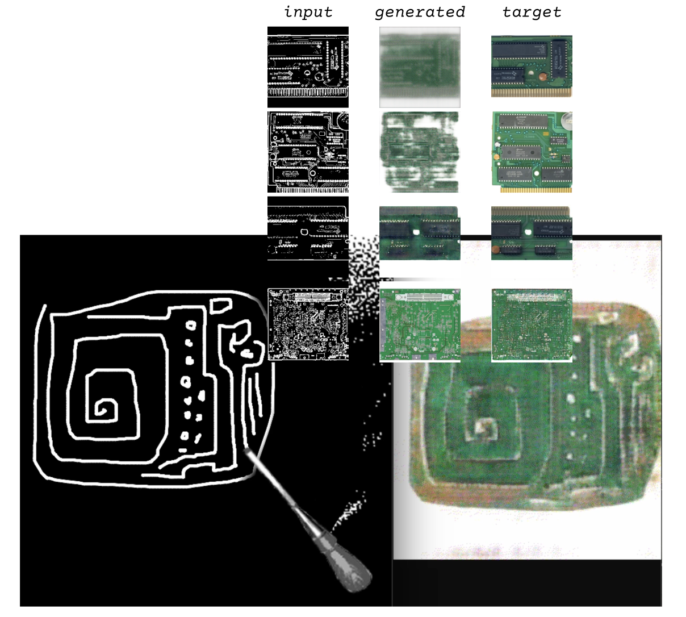

Sarah(í) Alvarez
@salvarezonline
Stumbling across the Strip Club, an archive of scans of stripped PCB's from video game consoles like Nintendo's SNES and Sony's PS1, I felt curious about the allure of naked hardware. There's a magic to peering inside the Black Box - I felt it myself when I found the bulbous ceramic diodes hidden at the center of an old synth organ left to rot on a Mid-Missouri street - but there's even more magic to realizing there's not much material there to unearth. Metal dots, copper lines, and tiny pebbles seem to conjure the world. Or, as uttered by SFPC co-founder Taeyoon Choi, Twitter-user @daisyowl, and a long lineage of Redditors in r/ProgrammerHumor: we tricked rocks to think.
But again, the circuit boards in the Strip Club are stripped; in most cases, literally stripped of most of their components in order to capture a clear snapshot of the connections and solder points, but also figuratively stripped of logic and "thought." The machine turns into image, and the magic into illusion. I don't feel the erotic tension circuit-board.de user ArcadeTV jokes about in the titling of his database, but I do feel the tension between the decay of the geological materials and logics used to build the circuits, the exploitation of the people mining said materials, and the infinities promised by an archive.
Human time, and therefore human infinities, are deeply entangled with geology. Drawings and inscriptions on cave walls serve as the earliest recordings, and the billion-year scale of geological time, or "deep time," reminds us that humans and their recordings are undeniably new to this Earth. Media theorists entangle the anthropocene and geology further: Siegfried Zielinski spoke of the deep time of media history by way of early music-composing automatons unfolding towards modern generative models; Jussi Parikka extended media history from the formation of precious earth metals to the geological legacy of human technologies. Within this expanded scope, it feels easy to draw a connection between the petroglyphs/graphs on cave walls and the petro-assemblages drawn together on green fiberglass boards. Within this era of techno-accelerationism, it feels too easy, still, to take the extractive manufacturing of those green fiberglass boards and abstract it entirely. Here, now, it's surely as simple as a drawing on the screen.